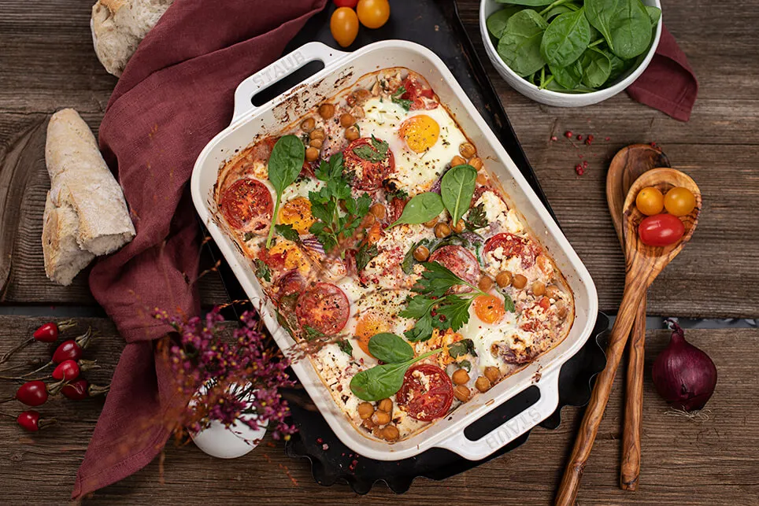

Delightful Pumpkin Shakshuka with Liptauer, feta & spinach

Arabic breakfast delight
Ever heard of Shakshuka? A spicy breakfast dish that is a speciality in North African and Arabic cuisine. Translated from Arabic, "Shakshuka" means something like "mixture". The dish is made from poached eggs in a sauce made from tomatoes, chili peppers and onions. And we add an autumnal aroma with pumpkin, feta and spinach. Our pumpkin Shakshuka is then served as an uncomplicated, quick breakfast idea straight from the oven.
Ingredients
- 2tsp olive oil
- 2 small red onions
- 4 small tomatoes
- 200g Hokkaido pumpkin
- 200g canned chickpeas
- 2-3 stalks of fresh parsley
- 1 can diced tomatoes
- 1/4 tsp chili flakes
- 1/4 tsp sweet paprika powder
- Salt & pepper
- 100g Liptauer
- 100g Feta
- 4 eggs
- some fresh spinac
Preparation steps
- Spread the olive oil into the casserole dish. Peel the onion and cut into eighths, wash and quarter the tomatoes, clean the pumpkin and dice it finely.
- Drain the chickpeas well and roughly chop the parsley. Put the vegetables and parsley into the casserole dish.
- Spread the diced tomatoes from the tin over the vegetables and season with chili, paprika powder, salt and pepper.
- Spread the Liptauer over the vegetables by the spoonful and crumble the feta over the top.
- Use a tablespoon to make four hollows and crack the eggs into them.
- Bake the shakshuka in a preheated oven at 180°C for around 15 minutes, until the eggs are set and the pumpkin is cooked.
- Sprinkle fresh spinach on top just before serving.